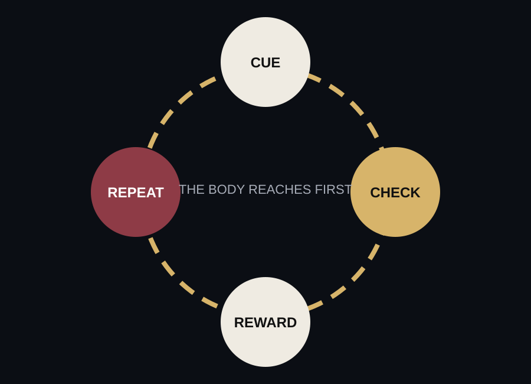

Exhibit 03
The Habit Loop
Phone dependency often hides inside normal behavior. The loop is simple: cue, check, reward, repeat. Over time, the body reaches before the mind decides.

The quick check that feels too small to matter.
A message, a laugh, a distraction, a hit of novelty.
The phone becomes the default answer to empty space.
The Dark Room
The check that happens before thought.
The strongest habits are not always dramatic. Sometimes they are quiet and repetitive. A person unlocks their phone while walking to another room, during a conversation pause, before homework, after homework, before sleep, and immediately after waking.
The action feels personal, but the pattern is widely shared. Pew Research Center reported that 38% of U.S. teens say they spend too much time on their smartphone.
Today’s Pattern
Pickups: 96
Notifications: 241
Longest session: 47 min
Boredom became a trigger.
Boredom used to create space for thinking, noticing, resting, or being uncomfortable long enough to start something. The phone offers a faster exit. That exit can be useful, but it can also train people to treat every empty moment as a problem.
This is where dependence becomes personal: the phone begins to manage mood, not just information.
Small Reflection
What feeling usually makes you reach for your phone?
Boredom? Stress? Awkwardness? Avoidance? Curiosity? Name the cue before judging the habit.
Next Exhibit: The Human Cost